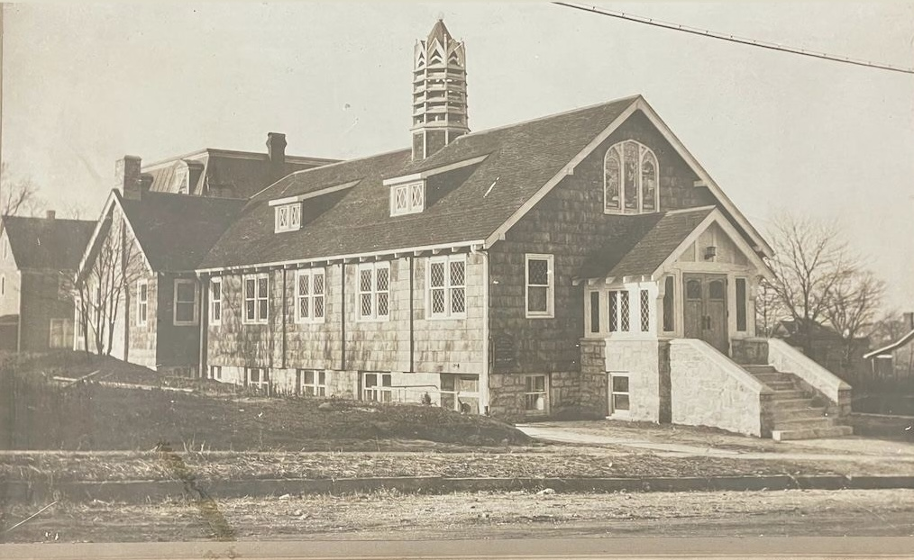

1. Zeffy
Give online through the church’s offering form. 100% of the gift supports FPC ministries and renovation.
Donate
Every gift — large or small — helps fund daily operations, community programs, and the care of this 117-year house of prayer. Tax-deductible gifts support FPC ministries and the campus renewal described at fpcpp.org.
Ten percent of every gift goes directly to outside missions and community care.

Give online through the church’s offering form. 100% of the gift supports FPC ministries and renovation.
Please write payable checks to FPC. Mail to:
50 W Palisades Blvd., Palisades Park, NJ 07650
Place cash or check in the offering box at the church entrance when you come to worship or prayer.

From the Edsall sanctuary and bell tower through a beautiful multi-ethnic revival, this campus has carried worship for generations. The public renovation appeal at fpcpp.org names urgent care for sanctuary, parsonage, grounds, and aging systems so the church can keep serving Palisades Park.
Weekly worship in four languages, twelve programs, VBS, short-term missions to Taiwan, and charity concerts all depend on this house remaining open.
Fundraising
Our full fundraising case for renewing the campus — in print and on film. Please share it with friends, family, and anyone who loves this church.